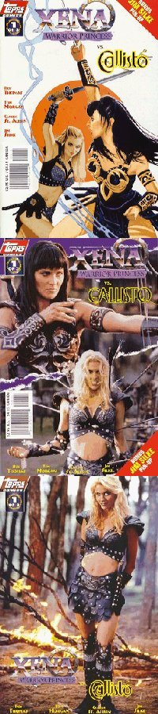
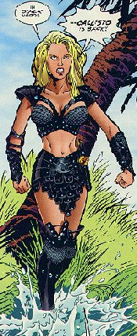
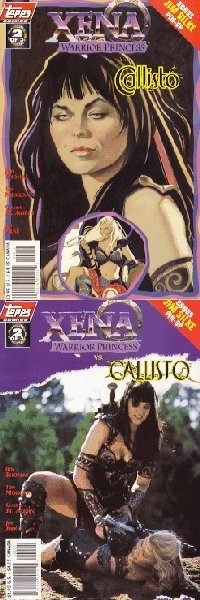
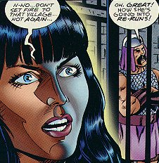
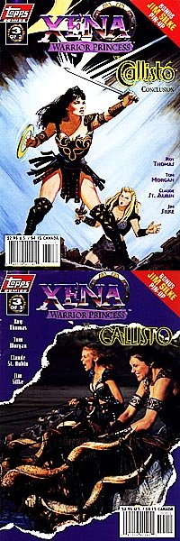

Xena: Warrior Princess/Callisto #1 (of 3)
Title: Part One of Three: Hydra and Seek
Date: February 1998
Actual Release: 4 March 1998
Pages: 32 (22 pgs story) plus pull-out poster
Cover Price: $2.95
Writer: Roy Thomas
Pencils: Tom Morgan
Inks: Steve Montano
Letters: John Workman
Colors: Digital Chameleon
Editor: Dwight Jon Zimmerman
Painted Cover: Jim Silke
Photo Cover: Unknown
NOTE: Xena: Warrior Princess created by Robert Tapert and John Schulian
OVERVIEW:
As Xena and Gabrielle are on their way to a wedding, they rescue Cassandra from Thanatos. Cassandra explains that she should be dead, she fled because she knew her death was coming. She has the ability to see the future, but no one believes anything she foretells. She then predicts Xena's death at Callisto's hand, but neither Xena nor Gabrielle believe her.
They explain that they are on the way to the wedding of Gregor and Pandora. Gabrielle also mentions that Pandora believes she could use the famous box to recapture some of the "desires of mortals" that had escaped, given the chance to say a certain spell under certain conditions.
Xena and company arrive, a bit late, at the wedding. Unknown to them, Callisto is watching, and planning a funeral. She animates a hydra that Hercules killed when he was first starting out, then sends her own mind to inhabit it. She then crashes the wedding, literally, and only lets Xena know who is responsible. Xena attacks, and isn't having much luck. She tells King Gregor how to defeat it, then tries to distract it, only to have her mind put in the Hydra's body by Callisto. Gabrielle figures it out, but King Gregor is about to kill the hydra, or rather, Xena.

COMMENTS:
The art cover is very nice. Now that Topps is including a pin-up of the art cover in every issue, folks who were just buying the photo covers get both.
The use of mythical figures hits a high here, with the appearance of Cassandra and Thanatos in addition to good ol' Pandora. Xena does a bit of name-dropping, mentioning that Hades isn's all that bad. Gabrielle is still pleased about Gabriel, the adopted son of King Gregor, who was named after her.
Xena has trouble controlling the Hydra's body, which clues in Gabrielle to what is happening.
The art in this issue isn't as gorgeous as much of the art in the Xena comics has been, but it works very well for the story and is very readable. You can tell who Gregor and Pandora are, and Callisto, Xena, and Gabrielle don't look distorted in most of the book. I do think Gabrielle's mouth wasn't done quite right, though.
Interesting to note: Cassandra predicted her own death then escaped it. This means that, in the Xenaverse, Cassandra's predictions can be changed. They aren't fate, hard and fast.
CONCLUSION:
Roy Thomas turned in another good first issue, let's see how good the rest of the series is...
Review Date 21 June by Laura Gjovaag

Xena: Warrior Princess/Callisto #2 (of 3)
Title: Part Two of Three: Trial by Torment
Date: March 1998
Actual Release: 22 April 1998
Pages: 32 (22 pgs story) plus pull-out poster
Cover Price: $2.95
Writer: Roy Thomas
Pencils: Tom Morgan
Inks: Claude St Aubin
Letters: John Workman
Colors: Matthew Paine and Digital Chameleon
Editor: Dwight Jon Zimmerman
Painted Cover: Jim Silke
Photo Cover: Unknown
NOTE: Xena: Warrior Princess created by Robert Tapert and John Schulian
OVERVIEW:
Gabrielle tackles Gregor to prevent him from killing Xena in the hydra's body. While everyone runs for cover, the hydra in Xena's body attacks Gabrielle. Pandora hits it with a rock, just as Callisto returns Xena to her own self. Xena is hurt, but not badly. There's more to worry about, as Callisto is back in the hydra and is not intent on taking over the kingdom. She does so, after restoring herself to her own body.
Callisto has placed Xena, Gregor, Pandora, and baby Gabriel in the dungeon and announced to all the land around that she is their new ruler. Now she has decided to take revenge on Xena, and she forces Xena to relive all her horrible misdeeds of her past, over and over, in her mind.
As the rulers of the surrounding city-states come at Callisto's demand, Gabrielle and Cassandra sneak into the dungeon. Cassandra tells the guards that Gabrielle won't sneak around the corner and bop them over the head, so they are completely surprised when Gabrielle does just that. Xena snaps out of Callisto's curse long enough to make a suggestion to Pandora and Gabrielle, then goes back into it.
Callisto appears before the gathered crowds, and displays King Gregor and family as his hostages. Then she brings out Xena, who is defiant. Defiant even as Callisto readies the final killing blow.
COMMENTS:

Fascinating cover, I'm finding that I really like the stuff by Jim Silke.
Cassandra's constant "I could've predicted that, but you wouldn't have believed me" gets really tiresome very early on in this book. It's amusing when she then uses that ability to surprise the guards.
Speaking of the guards, when Gregor calls them traitors, they indicate that they'd rather be traitors than dead. Callisto still threatens them with death if any of the prisoners escape. Being a guard in the Xenaverse is not a wise choice of employment.
Xena re-lives all her early conquests, including the murder of Callisto's family. Later, Callisto asks her if she enjoyed it. Xena truthfully replies that she did, only for a moment though, and that she successfully fought back against the nightmare.
The art is a bit of a letdown, but it still tells the story well.
CONCLUSION:
The quality of this series remains high: only a crummy conclusion could bring it down.
Review Date 21 June 1998 by Laura Gjovaag

Xena: Warrior Princess/Callisto #3 (of 3)
Title: Part Three of Three: Death Takes Five
Date: April 1998
Actual Release: 6 May 1998
Pages: 32 (22 pgs story) plus pull-out poster
Cover Price: $2.95
Writer: Roy Thomas
Pencils: Tom Morgan
Inks: Claude St Aubin
Letters: John Costanza
Colors: Digital Chameleon
Editor: Dwight Jon Zimmerman
Painted Cover: Jim Silke
Photo Cover: Unknown
NOTE: Xena: Warrior Princess created by Robert Tapert and John Schulian
OVERVIEW:
Gabrielle and Cassandra are racing back to where Xena and Gabrielle rescued Cassandra. Cassadra starts to predict something, but Gabrielle stops her. Cassadra asks if it's alright to predict that they will fail then. Gabrielle says she suddenly feels a lot better about it all...
Xena is dodging Callisto's bolts again, trying to stall for time. Callisto tells Xena to embrace death, that it's not all that bad. Xena asks why Callisto fought back to life and became immortal then. Callisto keeps firing bolts of flame at Xena.
Gabrielle and Cassadra reach the crevice of Thanatos, with Pandora's box. Sure enough, Thanatos comes to haul off Cassandra, and Gabrielle too (to save himself the trip). Gabrielle gets the box open and says a spell, though, and Thanatos is trapped inside Pandora box.
Lucky for Xena, as Callisto has finally nailed her. Callisto then tries to kill Gregor and Pandora, but they live. As Xena and Callisto start to battle, Gregor directs his subjects to flee. Callisto figures out that death must be trapped, but decides to make Xena's life as miserable as possible until Thanatos is free to take her. She continues to fry Xena gleefully.
In the meantime, Hades has figured out what happened to Thanatos, and isn't pleased. Luckily, his wrath is directed at Thanatos, and not Gabrielle and Thanatos. He frees Thanatos and sends him on some errands, and orders him to leave Cassandra alone ("I've already got more than enough Trojans down here from the war.").
Callisto kills a buzzard and realizes that Xena can now die, but Cassandra distracts Callisto with a false prophecy while Xena throws Pandora's box at Callisto. The box causes a sort of short-circuit, which dissolves Callisto (for the time). With Callisto defeated, the wedding finally proceeds. Cassandra stays with King Gregor and family.
COMMENTS:
Another neat cover from Jim Silke, though I'm really uncertain what it is supposed to be representing.
Capturing death in Pandora's box was clever, but I kept thinking "He won't stay there for long." Which made it even better when I turned out to be right. Cassandra and Gabrielle made a fairly good team.
What a cop-out way to get rid of Callisto! Yeah, she's this immortal with lots of powers and all, but surely there was a better way to get rid of her than a cosmic short-circuit with Pandora's box. It appeared that neither the box nor Callisto survived, so it looks like Pandora will never get a chance to rid the world of some mortal desires after all.
CONCLUSION:
All in all a great series, with a slightly disappointing ending. Well worth the read.
Review Date 21 June 1998 by Laura Gjovaag